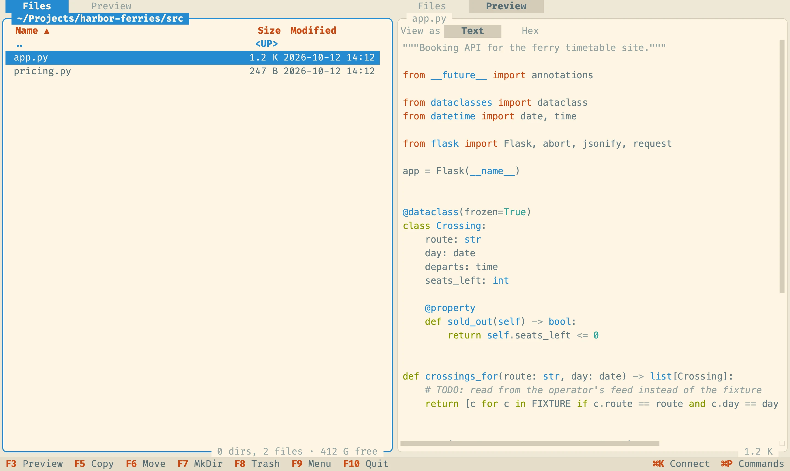

Preview
See what's inside before you open it
Switch either side to Preview and it shows whatever the cursor is on in the other panel: syntax-highlighted code, rendered Markdown, images, PDFs page by page, audio with a live spectrum and waveform, and video. Files on servers stream instead of downloading first.
- Code and text in your color scheme
- PDF paging with the keyboard or the wheel
- Hex view for everything else
